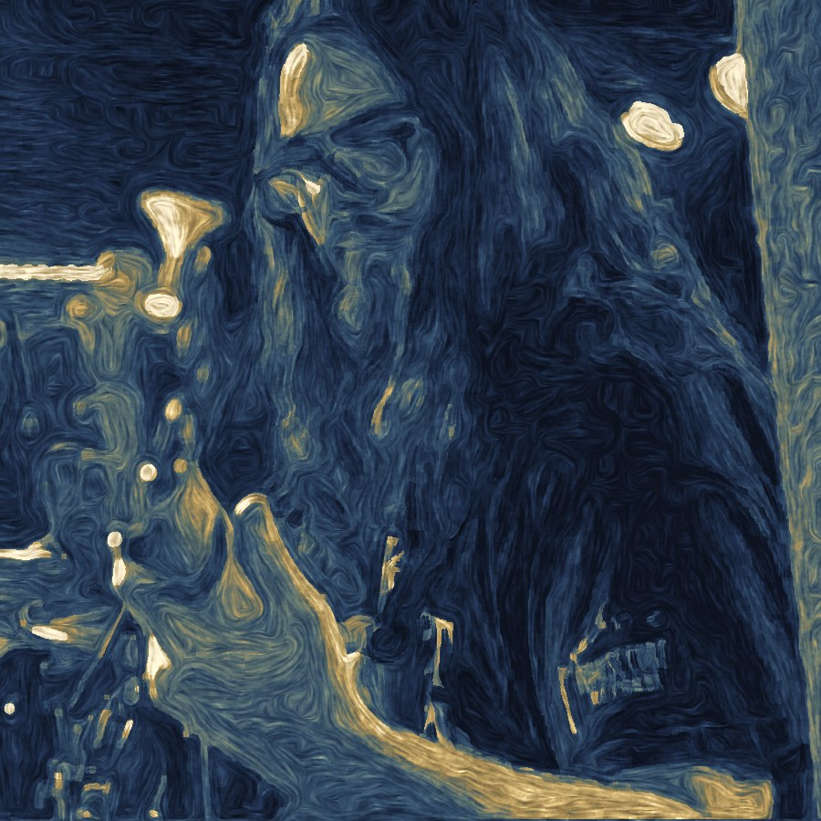

About
Trumpet, keys, and bass — the Great American Songbook played the way New Orleans plays everything: warm, loose, and with the door open.
Led by trumpeter Colman Grinell, Clowns of the Sun is a working trio of New Orleans musicians devoted to jazz standards. Without a drummer, the band leans on conversation: Luke Palmer's keys carry the harmony and the groove, Nick Benoit's bass walks the floor, and Colman's trumpet sings the melody over the top.
The trio is a natural fit for listening rooms, restaurants, private events, and anywhere that wants live jazz without drowning out the room.
The Trio

Press Photos
High-resolution portraits for print and promotion. Credit: Clowns of the Sun.


Booking
For bookings, press, and inquiries, contact Colman Grinell.